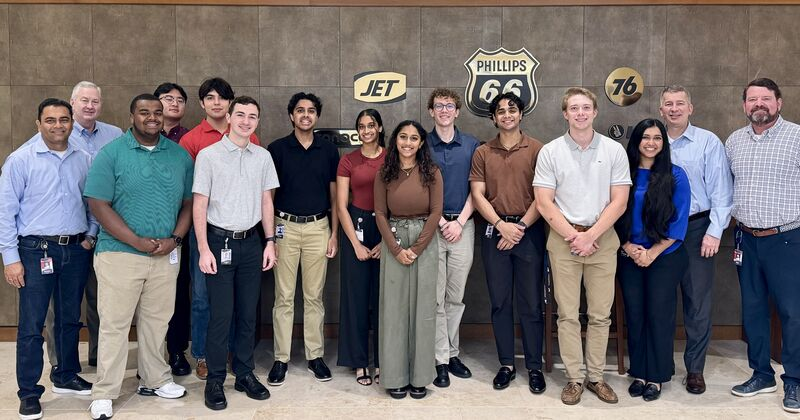

Phillips 66: My Internship Experience
02-Aug-2024
Work Experience
As part of my 11 week internship at Phillips 66, I had countless opportunities for learning. Diving into the environment of their global corporate headquarters, I gained valuable experience working on a technical project as part of a fast paced team and company. In the program, I was placed on the Cloud Innovation team for my main personal project, but also worked with quantum computing resources as part of a group capstone project. I also had the opportunity to pursue personal development and even earn a certification (Mendix Rapid Developer).
Personal Project - Terraform Standard Modules

On the cloud team, I was tasked with consolodating, updating, and making available 27 different standard Terraform modules for cloud deployment on both Amazon Web Services (AWS) and Microsoft Azure. The goal of the project was to speed up the development of other teams in the company, while still maintaining high standards for efficiency and functionality for cloud resources. I performed a major overhaul of modules for AWS, rewriting the majority of the flow of variables and configurations into the module, and made them available for use in the company for the first time. For the Azure modules, I made smaller changes, but made them much easier to access and upgrade in the future.
Additionally, I created a testing pipeline using Azure Pipelines for the standard modules I made available. This would dynamically detect the necessary tests to run in a stub pipeline, and then activate another pipeline that would simulate the process of a user deploying the standard module with a number of different parameters selected.
Group Project - Quantum Computing for Refinery Optimization (Knapsack Problem)

I worked on a team with fellow interns to develop a proof-of-concept (POC) software for the company to demonstrate how quantum computing could be used for optimization in the company. We developed a simple Linear Programming model that we then used quantum resources through AWS Braket to solve. This was meant to simulate a simplified refinery, and the possible benefits of different methods of computation on optimization. We created our solution utilizing the Quantum Approximate Optimization Algorithm (QAOA) which is a hybrid algorithm, using both quantum and conventional computing power to generate a solution. We viewed refinery optimization as a version of the Knapsack Problem, and through polynomial reduction to a Max-Cut graph problem, we were able to generate a solution with QAOA.
JohnSpeaks.com © Last Updated August 2024